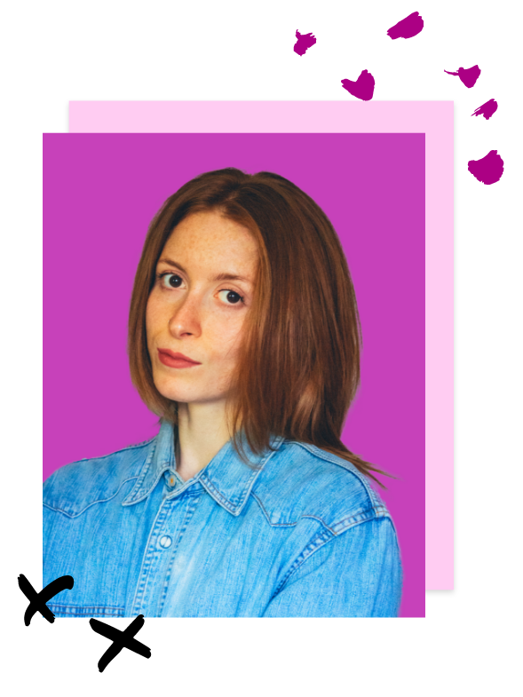

Ciao! 👋🏻 Sono Giulia, una ragazza di 25 anni che sta creando la versione migliore di se stessa e, nel suo piccolo, quella del mondo (digitale). Sono una UX/UI designer 👩🏼💻 con la passione per la fotografia e la scrittura. Mi piace esprimere la mia personalità attraverso l’arte e la creatività. Adoro tutto ciò che è visual design. Vado alla ricerca del bello e quando lo trovo sono pronta a fotografarlo. Colori e piccoli dettagli sono ciò che attirano la mia attenzione.
 LinkedIn
LinkedIn
 Leggi il mio CV
Leggi il mio CV
